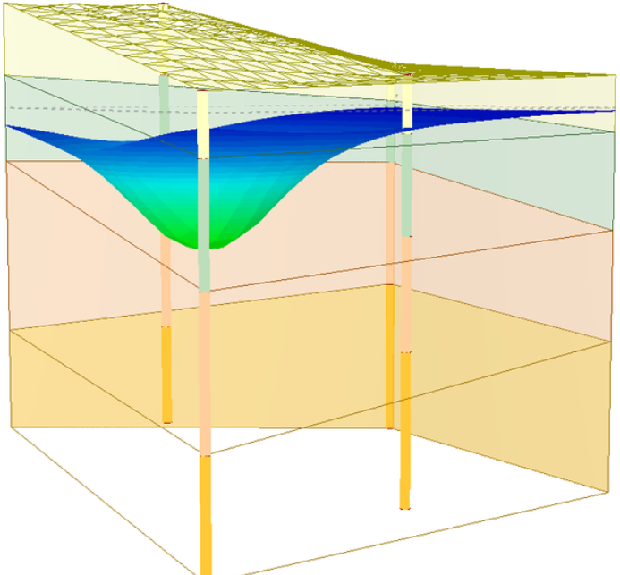

采集概况
指标分析
趋势预测
数据库列表
杭州萧山机场L滑工程智能化监测平台
总采集数据量(G)
35
当月采集数据量(G)
2.34
总数据量
235400
当月数据量
26155
总有效数据
196600

当月有效数据
20666
各分区沉降采集数据量
各分区测斜采集数据量
萧山机场地图
数据采集条数(当日)
有效数据条数(当日)
北一区
选择日期:
沉降数据
预测数据
监督学习分布
无监督学习分布


 各分区沉降采集数据量
各分区沉降采集数据量 各分区测斜采集数据量
各分区测斜采集数据量 萧山机场地图
萧山机场地图  数据采集条数(当日)
数据采集条数(当日) 有效数据条数(当日)
有效数据条数(当日) 沉降数据
沉降数据 预测数据
预测数据 监督学习分布
监督学习分布 无监督学习分布
无监督学习分布